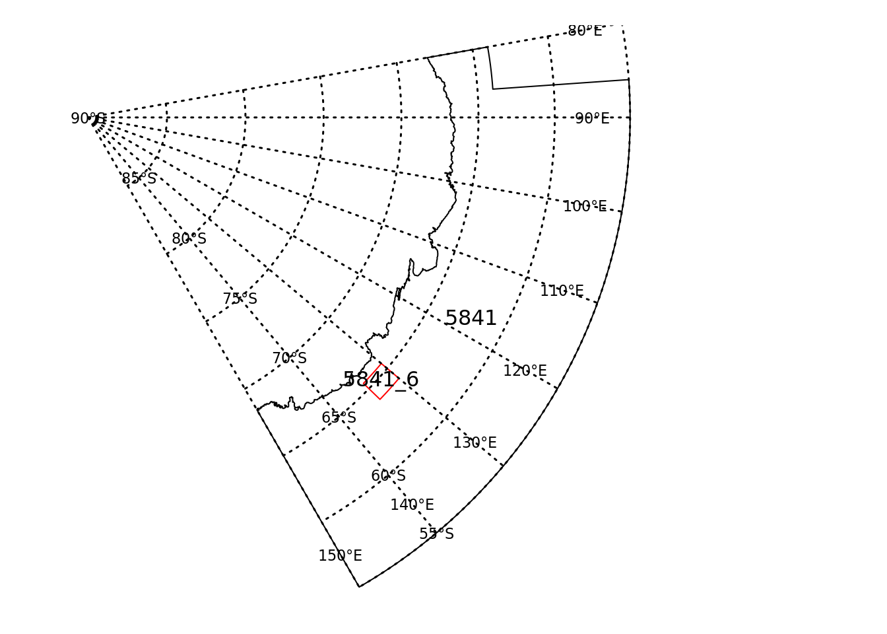

A package for reading spatial data that is displayed on the CCAMLR online GIS directly from the webpoint end service into R and creating spatial data for plotting and analyses in R or for exporting and displaying on the online GIS
Installation
You can install CCAMLRGIS from github with:
# install.packages("devtools")
devtools::install_github("ccamlr/CCAMLRGIS")Example
Prepare a simple map of a proposed Research Block with a CCAMLR Subarea of interest
Load CCAMLRGIS library and create a proposed Research block
library(CCAMLRGIS)
# Create research block polygon
# specify the name of the Research block
Name <-"5841_6"
# specify the Longitude coordinates in decimal degrees
Lons <- c(130, 130, 134, 134)
# sepcify the Latitude coordinates in decimal degrees
Lats <- c(-64.0, -65.5, -65.5,-64.0)
# bind information together into a dataframe for input into the create_Polys function see ?create_Polys
Coords <- data.frame(Name=rep(Name,length(Lons)),Lats=Lats,Lons=Lons)
# create polygon of proposed Research area
New_RB <-create_Polys(Coords)Load graticule library that will be added to map plot below
# add graticules and store locations of labels
library(graticule)
#> Loading required package: sp
# create graticules for plotting below
meridians <- seq(80,150, by = 10)
parallels <- seq(-90, -55, by = 5)
mlim <- c(min(meridians), max(meridians))
plim <- c(min(parallels), max(parallels))
grat <- graticule(lons = meridians, lats = parallels, xlim = mlim, ylim = plim, proj = raster::projection(New_RB))
labs <- graticule_labels(meridians, parallels, xline = 140, yline = -57.5, proj = raster::projection(New_RB))Load ASD data and index Subarea and/or Division of interest
# load ASDs from the online GIS - you will need to be online for this to work see ?load_ASDs
ASDs <- load_ASDs("GEOJSON")# index ASD in the area of interest - e.g. 58.4.1
ASD_5841 <- ASDs[ASDs$GAR_Short_Label%in%"5841",]Generate map plot
# plot ASD and new Research Block
par(mar=c(1,1,1,1))
raster::plot(ASD_5841)
text(sp::coordinates(ASD_5841), labels=as.character(ASD_5841$GAR_Short_Label),cex=1,col="black")
raster::plot(New_RB,add=TRUE,border="red")
text(sp::coordinates(New_RB), labels=as.character(New_RB$name),cex=1,col="black")
# add graticules to plot
raster::plot(grat, add = TRUE, lty = 3,lwd=1.5)
text(labs, lab = parse(text= labs$lab), col= "black", cex = 0.7)